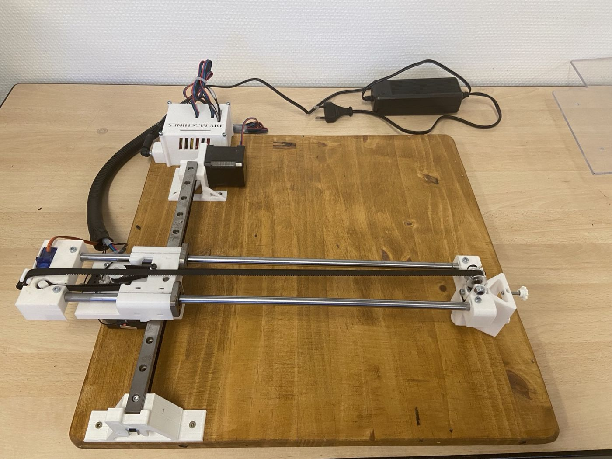
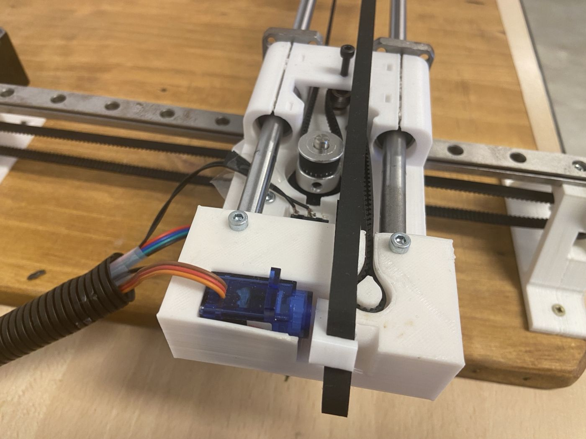
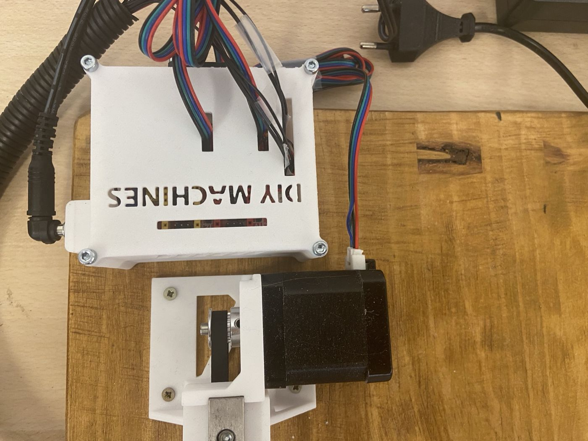
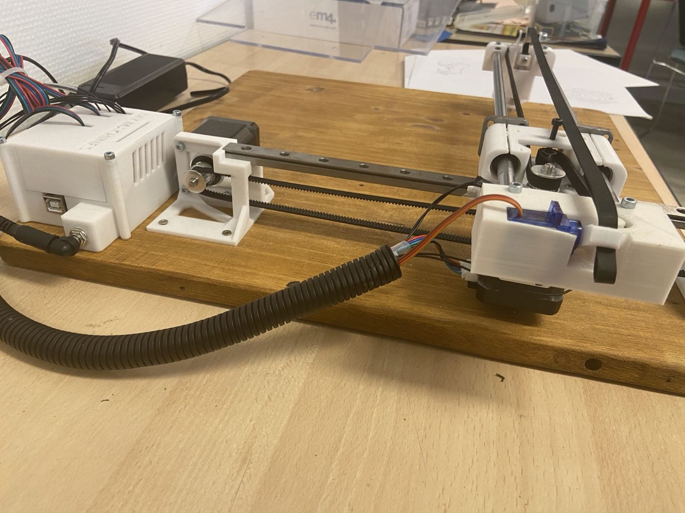
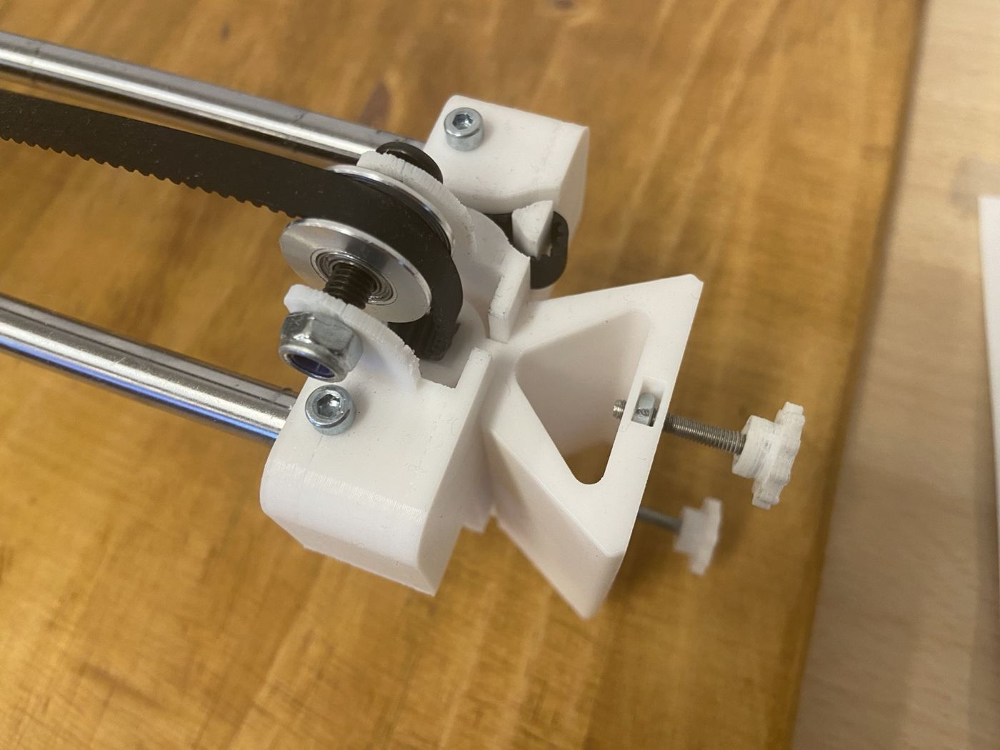

Traceur 2D — Projet électromécanique
Présentation
Notre équipe a construit un traceur à stylo à deux axes, intégrant guidages linéaires, courroies, moteurs, pièces imprimées en 3D et mécanisme de levée du stylo. Le fonctionnement automatique du prototype a été validé.Mon rôle
J’ai exercé le rôle de chef de projet, avec coordination des tâches, répartition du travail et suivi de la planification à l’aide de GanttProject. Les contributions techniques personnelles complémentaires ne sont pas détaillées sans source vérifiée.Réalisation
Les photos présentent le prototype assemblé, les rails, le système de transmission, le mécanisme mobile, les pièces imprimées et l’intégration électrique.Références et inspiration
Deux vidéos ont servi de documentation ou d’inspiration : référence vidéo 1 et référence vidéo 2. Il s’agit de ressources tierces, distinctes des travaux propres à l’équipe.Documentation
Le rapport d’origine n’est pas disponible actuellement. Aucune caractéristique de performance ni contribution individuelle non confirmée n’est inventée.




Présentation d’un projet réalisé dans un cadre universitaire, associatif ou de recherche. Contributions et sources créditées.